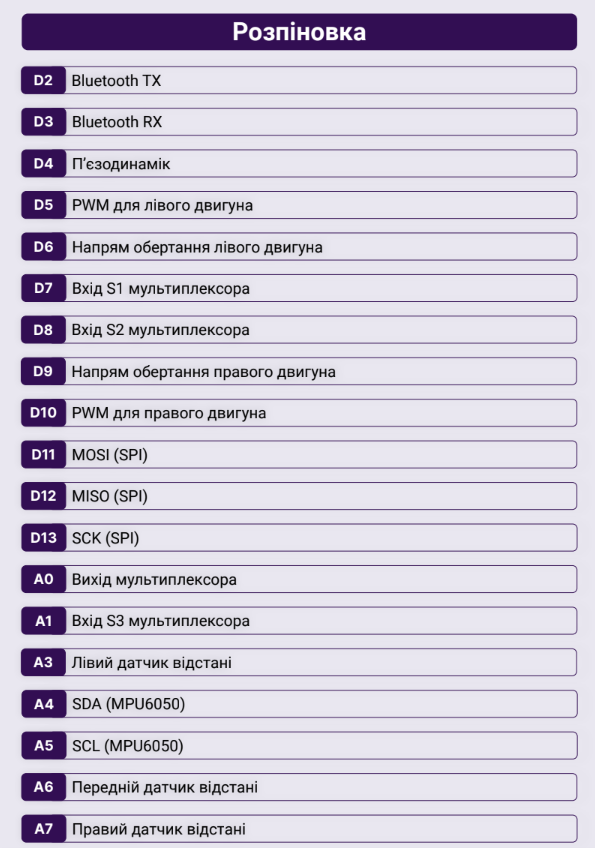
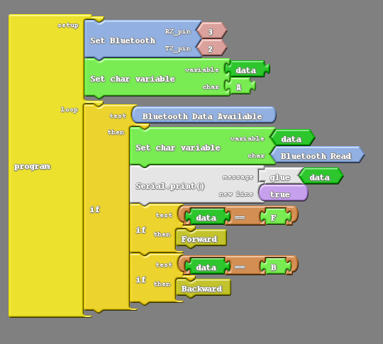

Підказки до MakerTime
Плата: Arduino Nano
Processor: Atmega328P
Порт для лазеру: D11
Приклад отримання значеннь з блютуз
Приклад отримання значеннь з блютуз + виклик функцій
Приклад функцій вперед і назад
! HIGH та LOW можуть бути інвертовані !